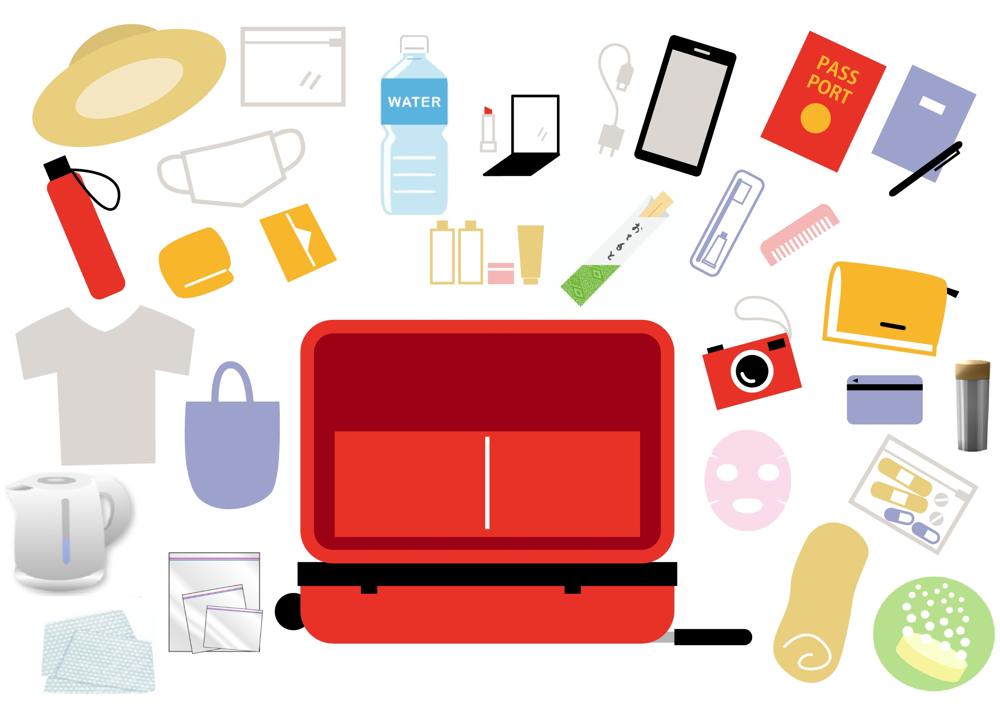

吃音・どもりの悩みは当事者にしか分からない
カミングアウトについて
自分が「吃音・どもり」だという事を知っている人は周りにいるでしょうか。 私は「どもり」を自覚したのが13歳という思春期だった事もあり、恥ずかしくて誰にも言えず、カミングアウトはしていません。 家族にはどもる事は無かったので家族が気づく事も無く、もし気づかれていても知らないふりをしていたと思います。 幼少期に発症した方はご家族が気づくパターンが多いと思いますが、カミングアウトできずにいる方も多いのではと思います。 カミングアウトについては、その方の性格によるので「どちらでもいいのではないか」と思います。 「カミングアウトするかどうか」で悩む必要は無く、自然に任せていいと思います。 私の経験ですが「カミングアウトしたらどもらないかも」と思った事があり、面接の最初に「緊張するとどもりますが、よろしくお願いします。」と言った事があります。 その場が「ワハハ」となり緊張感が薄れましたが、結果はかなりどもった記憶です(笑) カミングアウトを後悔したかと言えば、後悔はしていません。一瞬でも緊張感が薄れたのは良かったかなぁと思いました。 ただ結果が変わらずだったので「また別の方法を考えよう」と思った記憶です。相談できる仲間がいれば
SNSが普及した現代であれば、同じ悩みを持つ方と簡単に繋がる事ができるので、相談できる仲間を作る事はいい事だと思います。 私は誰にも相談する事なく、1人でもんもんとしていました。悩みや愚痴を誰かと共有していたら、また違った道があったのかもしれません。 個人的な意見ですが「吃音・どもり」の悩みが分かるのは「吃音・どもり」の症状を持つ人だけだと思います。 残念ですが「吃音・どもり」の症状がない家族や友人には、この辛さは絶対分からないと思います。 辛さを理解してくれようと寄り添ってくれるのはとてもありがたい事ですが、相談や愚痴などは当事者同士がいいのかな、と思います。不登校はもったいない！
このブログを始めるきっかけになった偶然見た「吃音について」の番組の中で『吃音・どもりがある学生の2～3割が不登校』という情報がありました。 私の学生時代は『病気でも学校に行けば治る』みたいな昭和的な発想が強かったので「不登校」はかなりハードルの高い事でしたが 今の時代は個性重視なので「行きたくない」のであれば「行かなくてもいい」のかもしれません。 でも、やっぱり「不登校」はもったいないと思います。 コロナ禍もあり「リモート授業」も選択肢にある今の時代は、どんな手を使ってでも「学校で学ぶ事」は大事にして欲しいなと思います。 「別室での授業」や「インターネット講義のみの学校」なんかもありますよね。 よく大人が言う「若い時にもっと勉強しておけば良かった」という言葉は本当です。 悩みながら辛い日々を送っているのは重々承知ですが、勉強している時間は悩みを忘れる事もできると思います。 難しいとは思いますが「吃音・どもりの悩み」と「学ぶ事」は別に分けて、せっかくの学べる時間を有効に使って欲しいなぁと思います。 当事者さえも分からないかも？！
「吃音・どもりの悩みは当事者にしか分からない」と言ってきましたが、当事者でさえも他人の悩みは理解しにくいのかなぁと思う事があります。 有名人で吃音・どもりをカミングアウトされている方がいますが 例えばアナウンサーの「小倉 智昭さん」はテレビでは吃らないという話ですが、日常で悩んでいる姿を想像するのは難しいと思います。 以前の記事でも書きましたが、私は「どもり」で「話し始める際に、音が発せられなかったり」の症状なので、 「発話中に繰り返し」がある「吃音」の方は、最初の文字数は多いけど話せてはいるので、何の問題も無いのでは、と思ってしまいます。 他人からすると「気にし過ぎ」なんでしょうね…。それは実感しています。 吃音・どもりに限らず、人間の悩みというのは、他人から見ると実はそれほど大したことではないのでしょうね。自分を大切にしてください
「吃音・どもりの悩み」で悩み過ぎていた時期がありました。 「なんで自分ばっかり…」「もし吃音じゃ無かったら」「消えてしまいたい」など、後ろ向きな事ばかり考えては、へこんでいました。 ひとつハッキリ言えるのは、「吃音・どもり」になってしまったのは ・あなたのせいではありません ・親の育て方のせいではありません ・家庭環境のせいではありません ・遺伝子のせいではありません(個人的見解) ・身体的な制限のせいではありません(個人的見解) 誰のせいでも無いのは確かです。なので、自分や誰かを責めるのは、違うのかなと思います。 やり場のない絶望感は私も経験しています。なので「何かのせい」にしたい気持ちもよく分かります。でもこの辛さは乗り越えられるものだと思います。時間はかかりますが「そういう事か」と思える日は来るはずです。 宗教っぽい文章になってしまいましたが、無宗教なので安心して下さい(笑) 次の記事 吃音・どもりのイライラを何かのエネルギーにしませんかスポンサーリンク